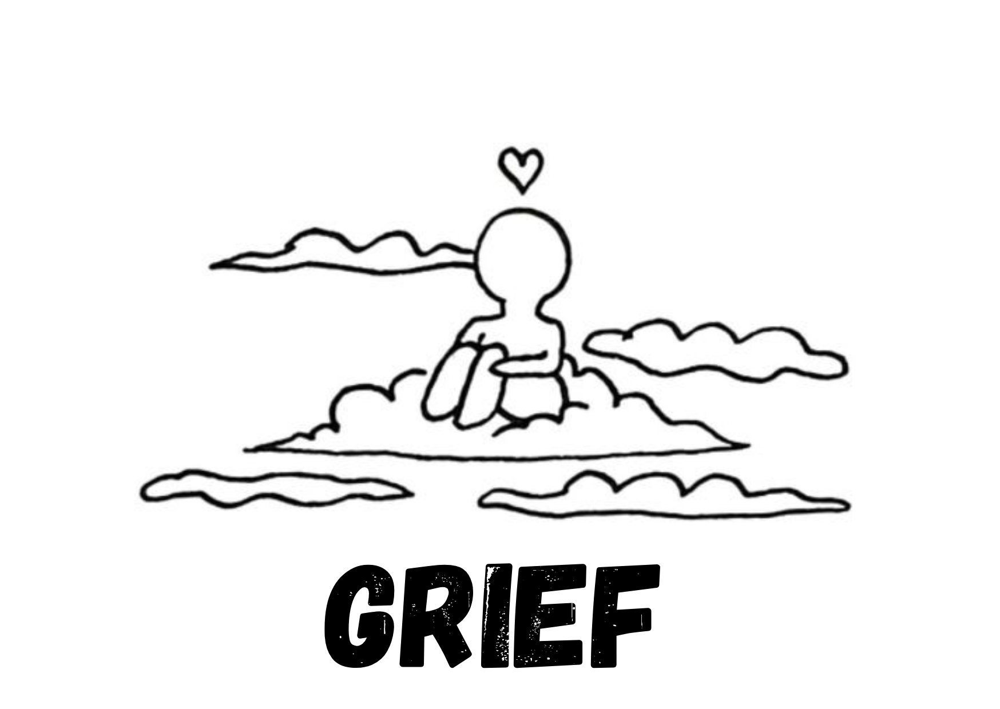

Grief

What is it?
Grief is a natural response to losing someone or something meaningful. It can come in waves and affect emotions, body, and mind.
Signs & Symptoms
- Deep sadness or emotional numbness
- Sleep or appetite changes
- Difficulty concentrating
- Guilt or anger
- Physical pain(headaches, fatigue)
Coping Tips
- Let yourself feel the emotions
- Talk about your loss with others
- Create a memory ritual(e.g., journaling or lighting a candle)
- Take care of your body and rest
- Be patient with the healing process
When to Consult a Professional
- Grief is not easing after months
- You feel stuck in sadness or guilt
- You have thoughts of self-harm or feel hopeless